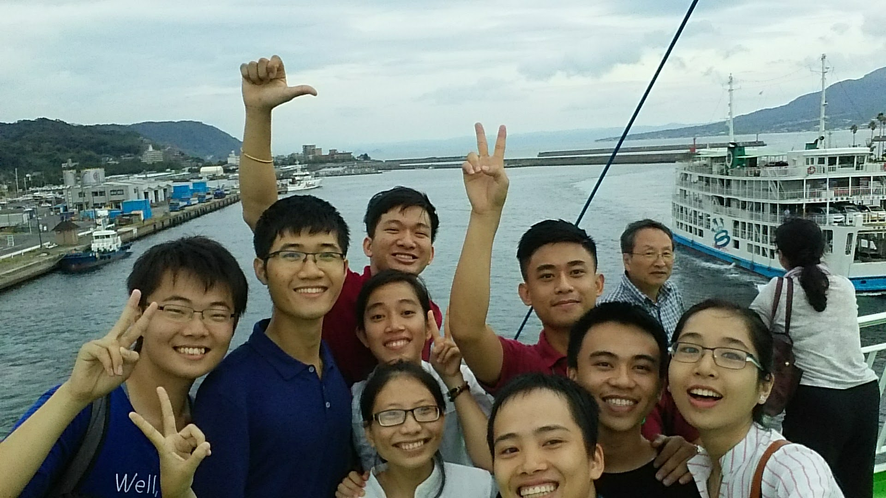
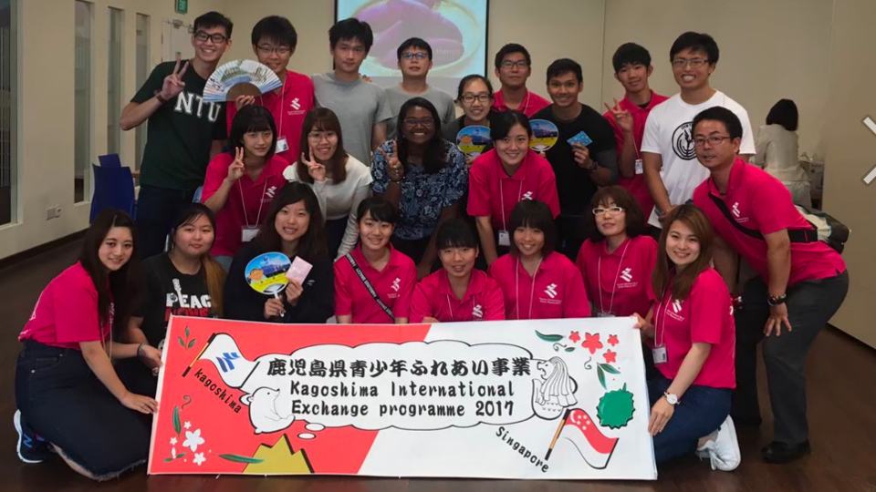

Profile
はじめまして，琉球大学工学部のかいとです．
現在タスク管理ツールや機械学などについて少しづつ勉強しております．
高専ではロボット工学を専攻し、ハード系プログラミングや機械電子工学を主に学んでいました。
趣味としては，映画鑑賞や旅行に行くことです．
(2020/07/07)
Profile
はじめまして，琉球大学工学部のかいとです．
現在タスク管理ツールや機械学などについて少しづつ勉強しております．
高専ではロボット工学を専攻し、ハード系プログラミングや機械電子工学を主に学んでいました。
趣味としては，映画鑑賞や旅行に行くことです．
(2020/07/07)
Skill
タスク管理ツールを開発しています．
韓国の理工系TOP4大学と制御システム開発を行いました。
PLC言語、ラダー言語など生産技術に欠かさない知識や技術、世界標準のプログラミング言語の国際標準規格であるIEC 61131-3を習得し、コミュニケーションの壁ともなる言語の1つ“のプログラミング言語(制御系リアルタイム言語)を指導教員から質問されたら即答で きるレベルまで習得し、画像認識を使った3軸で動かすクレーンゲームみたいなものを使い、5つの物体 を1色だけの色センサと天秤だけを使い、違う重さ、色の重さ順に並び替える自動識別器を作成しまし た。ソウル大学の院生と行い、最年少の高専2年生で参加しました。

Activity
官公庁にて海外⻘少年と交流を図ったことです。 私はオールアラウンドなエンジニアになるため大学編入前は高専の電子制御工学科で機 械、電気、情報について幅広く学び海外の人とも交流を図り、いろいろな技術を身につ けようと国際交流のリーダーとして活動していました。当たり前のことになりますが外 国人とは人種や国柄、文化、宗教が当然異なり、価値観も多様的なものです。そのため、 私は宗教や国柄などについて理解し、どんなに違った人とでも普通に接し、相手が困っ ていることに対してはさりげなくサポートすることでどんな人とも仲良くできるようになり、国際交流と言えば海斗と言われるまでになりました。
さくらサイエンスプラン
韓国の理工系TOP4大学と制御システム開発を行いました。
PLC言語、ラダー言語など生産技術に欠かさない知識や技術、世界標準のプログラミング言語の国際標準規格であるIEC 61131-3を習得し、コミュニケーションの壁ともなる言語の1つ“のプログラミング言語(制御系リアルタイム言語)を指導教員から質問されたら即答で きるレベルまで習得し、画像認識を使った3軸で動かすクレーンゲームみたいなものを使い、5つの物体 を1色だけの色センサと天秤だけを使い、違う重さ、色の重さ順に並び替える自動識別器を作成しまし た。ソウル大学の院生と行い、最年少の高専2年生で参加しました。
県青少年代表としてシンガポール政府訪問、教育施設訪問
シンガポール南洋理工大学で日本政府代表として日本文化について発表を行い、文化や経済などについて議論して自分の視野が狭いことに気づき、世界の広さをまのあたりにしました。
シンガポール南洋理工大学